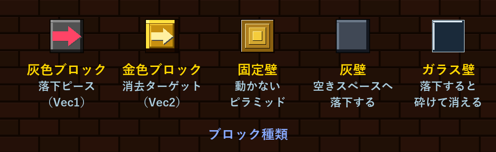
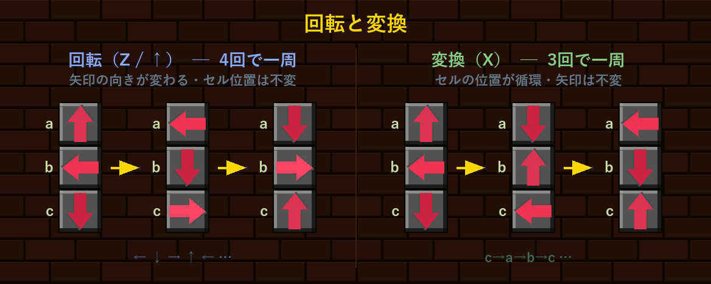
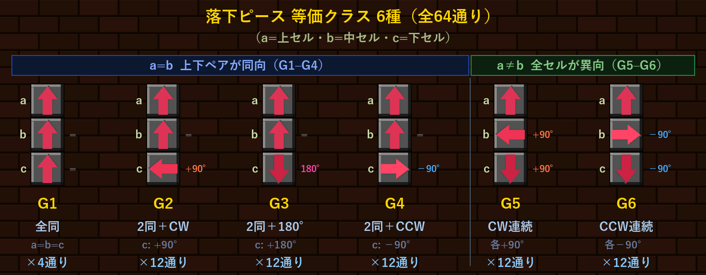
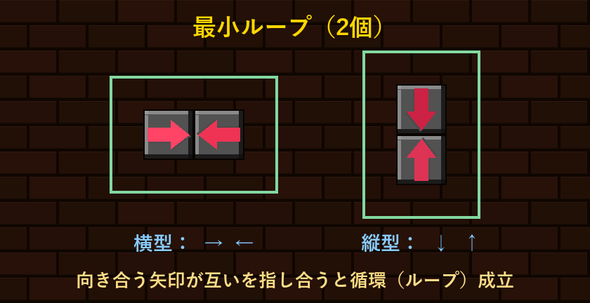
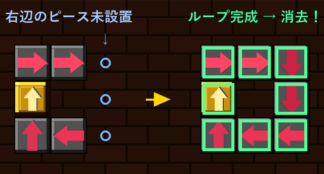

3個一組の灰色ブロックを落下させ、金色ブロックをループで消すとステージクリアです。
ループとは、同色の矢印が向き合って循環する経路のことです。フィールドから金色ブロックを全て排除することがゴールです。

灰色ブロックはこのゲームの主役です。 ステージには最初から灰色ブロックが固定配置されており、ループ経路の一部を担っています。 同時に、プレイヤーが操作する落下ピースも灰色ブロック3個一組で構成されています。 各セルには矢印の向き（↑↓←→）が設定されており、落下済みの灰色ブロックと繋いでループを作るのが基本戦略です。
金色ブロックはループで消すターゲットです。金色ブロック自身にも矢印の向きがあり、ループ経路の一部として機能します。ただし、金色ブロックだけではループを形成できません。
固定壁・灰壁・ガラス壁はループで消えない障害物です。灰壁は空きスペースへ落下し、ガラス壁は着地と同時に砕けて消えます。
落下ピースは灰色ブロック3個一組（上・中・下 = a・b・c）で構成されます。 操作は回転と変換の2種類で、接地するのは常に下セル（c）です。 変換でどのセルを下に持ってくるかを決め、回転で向きを整えてから落とすのが基本の手順です。

矢印の向きは4通り、3セルなので 4³ = 64 通りのピースがあります。 回転（4サイクル）×変換（3サイクル）の組み合わせで移り合えるピース同士は実質同一なので、 6クラスに分類できます（合計 4+12+12+12+12+12 = 64 通り）。



ピースの全パターン数は 4³ = 64 通り。回転と変換で移り合えるものを「同一視」したとき、 クラス数がちょうど 6 になることを Burnside の補題で示します。
2つの操作を定義します（方向は 0=← 1=↓ 2=→ 3=↑ で mod 4 の整数として扱います）。
| 操作 | ピース [a, b, c] への作用 | 位数 |
|---|---|---|
| R（回転） | [a, b, c] ↦ [a+1, b+1, c+1]（各方向 +1 mod 4） | 4 |
| T（変換） | [a, b, c] ↦ [c, a, b]（セル位置を循環シフト） | 3 |
RT と TR の計算：
RT = TR なので R と T は可換です。 R の位数は 4、T の位数は 3、gcd(4, 3) = 1 より、 生成される群 G は G ≅ Z₄ × Z₃ ≅ Z₁₂（位数12の巡回群）となります。
群の元は Rⁱ Tʲ（i = 0,1,2,3 j = 0,1,2）の12通りです。
群 G が有限集合 X に作用するとき、軌道（同値類）の個数は：
ここで Fix(g) = { x ∈ X | g·x = x }（g で不動な元の集合）。
Rⁱ Tʲ が [a, b, c] を固定する条件を求めます。
j = 0（変換なし）のとき：Rⁱ T⁰([a,b,c]) = [a+i, b+i, c+i] = [a,b,c]
これは a+i ≡ a (mod 4) が必要 → i ≡ 0 (mod 4) → i = 0 のみ可能。
| 元 | |Fix| | 理由 |
|---|---|---|
| R⁰T⁰（恒等元） | 64 | 全ての64通りが不動 |
| R¹T⁰, R²T⁰, R³T⁰ | 0 | i+i≡i (mod 4) を満たす方向が存在しない |
j = 1（T を1回適用）のとき：Rⁱ T¹([a,b,c]) = [c+i, a+i, b+i] = [a,b,c]
つまり c+i ≡ a、a+i ≡ b、b+i ≡ c の連立。3式を足すと 3i ≡ 0 (mod 4)、すなわち i ≡ 0 (mod 4/gcd(3,4)) = 0 (mod 4)。
よって i = 0 のみ可能。そのとき c = a, a = b, b = c → a = b = c。4通り。
| 元 | |Fix| | 理由 |
|---|---|---|
| R⁰T¹ | 4 | a = b = c（全4方向） |
| R¹T¹, R²T¹, R³T¹ | 0 | i ≠ 0 では解なし |
j = 2（T を2回適用）のとき：Rⁱ T²([a,b,c]) = [b+i, c+i, a+i] = [a,b,c]
b+i ≡ a、c+i ≡ b、a+i ≡ c → j=1 と対称な構造で同じ結論。i = 0 のみ、a = b = c で 4通り。
| 元 | |Fix| | 理由 |
|---|---|---|
| R⁰T² | 4 | a = b = c（全4方向） |
| R¹T², R²T², R³T² | 0 | 解なし |
以上より、回転と変換による同値類はちょうど 6クラス となります。
各クラスの代表元と個数（4 + 12×5 = 64 の内訳）はゲーム本文の分類表の通りです。 G1 のみ |Fix(R⁰T¹)| = |Fix(R⁰T²)| = 4 に寄与する「高対称」なクラスで、 残る G2–G6 は変換・回転いずれでも自分自身に戻らない「一般的」なクラスです。
難易度の高いステージの攻略ポイントをまとめています。